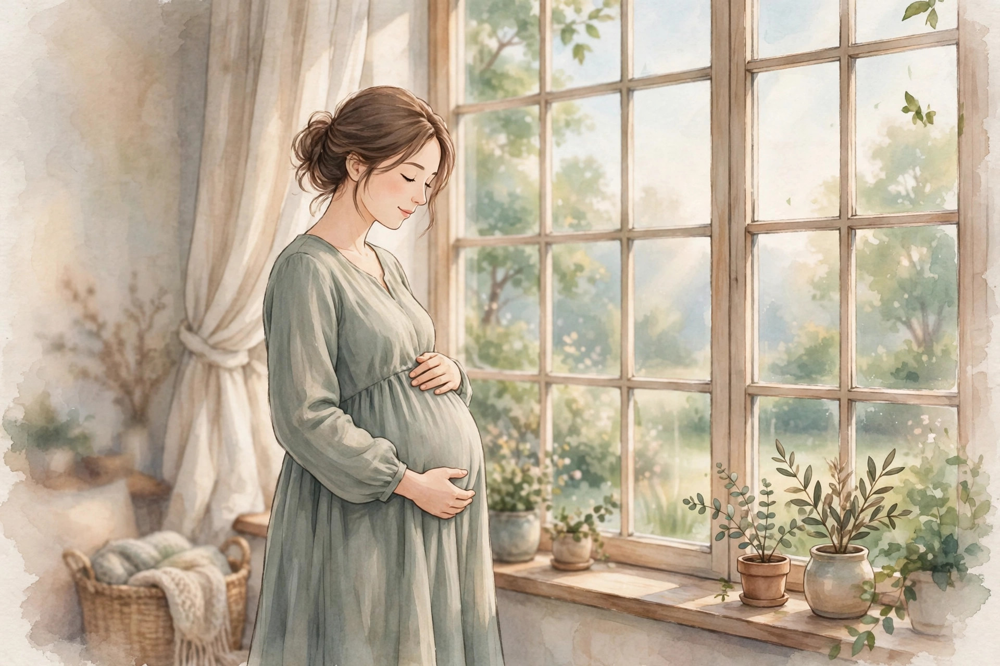

Maternity Photo Prompts: 10 Soft Ideas for 2026


Pregnancy has a way of passing quickly, even while the days feel long. One week you are telling people the news, the next you are wondering where the time went. A photo is a small way to hold on to it.
These prompts are gentle on purpose. Soft light, plain backgrounds, quiet poses. Nothing loud, nothing that takes attention away from you and the life you are carrying.
Start with a photo you already like. A picture by a window, in the garden, or on the sofa at home. The prompt keeps your face the same and places you in a calm, simple scene.
Take your time with these. Try one, look at it properly, and only then try another. The best maternity photo is usually the simplest one.
Before you start
Maternity photos should feel calm, so these five points are worth a minute of your time before you start.
- Use a photo where your face is clear and softly lit. A picture taken near a window in daylight is a good place to start.
- Wear something you feel comfortable in for the starting photo. The prompt can change the dress, but comfort shows in your expression.
- Keep the background simple. A plain wall or a quiet garden lets the focus stay on you.
- Copy the prompt exactly as it is the first time. Change one thing later if you need to, not five at once.
- Save the result you like, then try a second version. Soft light varies a little each run, and the second one is often the calmer picture.
Table of contents
- Prompt 1: In a soft dress by a window
- Prompt 2: In a garden at golden hour
- Prompt 3: With your partner, hands together
- Prompt 4: In a white dress on a plain background
- Prompt 5: Sitting on a sofa with a book
- Prompt 6: In a field at sunset
- Prompt 7: Close up, hands on belly
- Prompt 8: With baby shoes in hand
- Prompt 9: By the sea at dusk
- Prompt 10: In a knit sweater at home
- How to use these prompts
- Tips to get a better result
- Common mistakes to avoid
- Frequently asked questions
10 copy and paste prompts
Choose the scene that feels most like you right now, copy the prompt, and paste it with your photo.
1. In a soft dress by a window
Create a realistic, natural photo from my uploaded photo. Keep the face exactly the same as in the uploaded photo, with the same eyes, smile, hair and skin tone. Do not change the person into someone else, and do not make the skin look smooth or plastic. Show you in a soft long dress by a large window, hands on your belly, with calm morning light. Keep the pose relaxed and natural, with a real expression, not a stiff studio pose. Use soft, natural light that suits the scene, with clear detail in the face, hair and clothes. Keep the background simple so the person stays the main focus. Shoot it in a vertical 3 to 4 frame, as if taken on a 35mm lens with a shallow depth of field. The final photo should look like a real photo taken on a good day, with true colours, gentle shadows and a calm, honest feel. It should work well for a profile photo, a print, or a post with family and friends.
A soft dress by a window uses the best light in any house. Daylight through glass is gentle on skin, and the pose stays relaxed and natural.
2. In a garden at golden hour
Create a realistic, natural photo from my uploaded photo. Keep the face exactly the same as in the uploaded photo, with the same eyes, smile, hair and skin tone. Do not change the person into someone else, and do not make the skin look smooth or plastic. Show you in a soft dress in a garden at golden hour, with flowers and warm light. Keep the pose relaxed and natural, with a real expression, not a stiff studio pose. Use soft, natural light that suits the scene, with clear detail in the face, hair and clothes. Keep the background simple so the person stays the main focus. Shoot it in a vertical 3 to 4 frame, as if taken on a 50mm lens with a shallow depth of field. The final photo should look like a real photo taken on a good day, with true colours, gentle shadows and a calm, honest feel. It should work well for a profile photo, a print, or a post with family and friends.
A garden at golden hour warms everything without any effort. The light is low and kind, and the flowers stay soft behind you.
3. With your partner, hands together
Create a realistic, natural photo from my uploaded photo. Keep the face exactly the same as in the uploaded photo, with the same eyes, smile, hair and skin tone. Do not change the person into someone else, and do not make the skin look smooth or plastic. Show you with your partner, both hands on your belly, close together, with a plain warm background. Keep the pose relaxed and natural, with a real expression, not a stiff studio pose. Use soft, natural light that suits the scene, with clear detail in the face, hair and clothes. Keep the background simple so the person stays the main focus. Shoot it in a vertical 3 to 4 frame, as if taken on a 85mm portrait lens with a shallow depth of field. The final photo should look like a real photo taken on a good day, with true colours, gentle shadows and a calm, honest feel. It should work well for a profile photo, a print, or a post with family and friends.
Hands together with your partner tells the story in one small gesture. It is a quiet pose, and quiet poses suit maternity photos best.
4. In a white dress on a plain background
Create a realistic, natural photo from my uploaded photo. Keep the face exactly the same as in the uploaded photo, with the same eyes, smile, hair and skin tone. Do not change the person into someone else, and do not make the skin look smooth or plastic. Show you in a white dress on a plain light background, with soft light and a calm smile. Keep the pose relaxed and natural, with a real expression, not a stiff studio pose. Use soft, natural light that suits the scene, with clear detail in the face, hair and clothes. Keep the background simple so the person stays the main focus. Shoot it in a vertical 3 to 4 frame, as if taken on a 35mm lens with a shallow depth of field. The final photo should look like a real photo taken on a good day, with true colours, gentle shadows and a calm, honest feel. It should work well for a profile photo, a print, or a post with family and friends.
A white dress on a plain background is timeless. There is nothing to date the photo, so it will still look right years from now.
5. Sitting on a sofa with a book
Create a realistic, natural photo from my uploaded photo. Keep the face exactly the same as in the uploaded photo, with the same eyes, smile, hair and skin tone. Do not change the person into someone else, and do not make the skin look smooth or plastic. Show you sitting on a sofa with a book, in a soft dress, with warm lamp light. Keep the pose relaxed and natural, with a real expression, not a stiff studio pose. Use soft, natural light that suits the scene, with clear detail in the face, hair and clothes. Keep the background simple so the person stays the main focus. Shoot it in a vertical 3 to 4 frame, as if taken on a 50mm lens with a shallow depth of field. The final photo should look like a real photo taken on a good day, with true colours, gentle shadows and a calm, honest feel. It should work well for a profile photo, a print, or a post with family and friends.
Sitting on a sofa with a book is the most at home scene here. It feels like an ordinary afternoon, and that ordinary feeling is what makes it honest.
6. In a field at sunset
Create a realistic, natural photo from my uploaded photo. Keep the face exactly the same as in the uploaded photo, with the same eyes, smile, hair and skin tone. Do not change the person into someone else, and do not make the skin look smooth or plastic. Show you in a soft dress in a field at sunset, with tall grass and warm light. Keep the pose relaxed and natural, with a real expression, not a stiff studio pose. Use soft, natural light that suits the scene, with clear detail in the face, hair and clothes. Keep the background simple so the person stays the main focus. Shoot it in a vertical 3 to 4 frame, as if taken on a 85mm portrait lens with a shallow depth of field. The final photo should look like a real photo taken on a good day, with true colours, gentle shadows and a calm, honest feel. It should work well for a profile photo, a print, or a post with family and friends.
A field at sunset gives you open space and warm light. The sky stays soft, the grass stays simple, and you stay the focus.
7. Close up, hands on belly
Create a realistic, natural photo from my uploaded photo. Keep the face exactly the same as in the uploaded photo, with the same eyes, smile, hair and skin tone. Do not change the person into someone else, and do not make the skin look smooth or plastic. Show you in a close up photo, hands on your belly, with soft light and a plain background. Keep the pose relaxed and natural, with a real expression, not a stiff studio pose. Use soft, natural light that suits the scene, with clear detail in the face, hair and clothes. Keep the background simple so the person stays the main focus. Shoot it in a vertical 3 to 4 frame, as if taken on a 35mm lens with a shallow depth of field. The final photo should look like a real photo taken on a good day, with true colours, gentle shadows and a calm, honest feel. It should work well for a profile photo, a print, or a post with family and friends.
A close crop of hands on your belly is the most personal photo on this page. It needs a clear photo to work, and when it works it is a lovely keepsake.
8. With baby shoes in hand
Create a realistic, natural photo from my uploaded photo. Keep the face exactly the same as in the uploaded photo, with the same eyes, smile, hair and skin tone. Do not change the person into someone else, and do not make the skin look smooth or plastic. Show you holding small baby shoes, in a soft dress, with a plain warm background. Keep the pose relaxed and natural, with a real expression, not a stiff studio pose. Use soft, natural light that suits the scene, with clear detail in the face, hair and clothes. Keep the background simple so the person stays the main focus. Shoot it in a vertical 3 to 4 frame, as if taken on a 50mm lens with a shallow depth of field. The final photo should look like a real photo taken on a good day, with true colours, gentle shadows and a calm, honest feel. It should work well for a profile photo, a print, or a post with family and friends.
Baby shoes in hand add a small, sweet detail without any clutter. The photo stays about the wait, not about props.
9. By the sea at dusk
Create a realistic, natural photo from my uploaded photo. Keep the face exactly the same as in the uploaded photo, with the same eyes, smile, hair and skin tone. Do not change the person into someone else, and do not make the skin look smooth or plastic. Show you by the sea at dusk, in a soft dress, with a calm sky. Keep the pose relaxed and natural, with a real expression, not a stiff studio pose. Use soft, natural light that suits the scene, with clear detail in the face, hair and clothes. Keep the background simple so the person stays the main focus. Shoot it in a vertical 3 to 4 frame, as if taken on a 85mm portrait lens with a shallow depth of field. The final photo should look like a real photo taken on a good day, with true colours, gentle shadows and a calm, honest feel. It should work well for a profile photo, a print, or a post with family and friends.
By the sea at dusk the light is low and the sound of the water is almost in the picture. It is a calm, thoughtful scene for a thoughtful time.
10. In a knit sweater at home
Create a realistic, natural photo from my uploaded photo. Keep the face exactly the same as in the uploaded photo, with the same eyes, smile, hair and skin tone. Do not change the person into someone else, and do not make the skin look smooth or plastic. Show you at home in a soft knit sweater, hands on your belly, with warm indoor light. Keep the pose relaxed and natural, with a real expression, not a stiff studio pose. Use soft, natural light that suits the scene, with clear detail in the face, hair and clothes. Keep the background simple so the person stays the main focus. Shoot it in a vertical 3 to 4 frame, as if taken on a 50mm lens with a shallow depth of field. The final photo should look like a real photo taken on a good day, with true colours, gentle shadows and a calm, honest feel. It should work well for a profile photo, a print, or a post with family and friends.
A knit sweater at home is warm in every sense. Soft fabric, soft light, a familiar room. It is the kind of photo that feels like you.
How to use these prompts
These are family photos, so the starting photos matter more than the prompt. Get the photos right and the rest is easy.
How to use a prompt in Google Gemini
- Open Gemini on your phone or computer.
- Upload one clear photo per person. For a baby or maternity photo, one clear photo is enough.
- Copy one prompt from this page and paste it under your photo.
- Send it, and wait for the result. Do not send the same prompt again while it is still working.
- Look at the faces first, then the hands and the background. If the faces look right but the light is off, keep the photo and try the same prompt once more.
How to use a prompt in ChatGPT
- Open ChatGPT on your phone or computer.
- Upload your photo in the chat. For a family photo, add one clear photo per person.
- Copy one prompt from this page and paste it with your photo.
- Send it, and wait for the result.
- If the result is close but not quite right, ask for one small change, such as warmer light or a simpler background, and keep the rest of the prompt the same.
Both tools can give a different result from the same prompt. That is normal with family photos, because there are more faces to keep right. Try the same prompt in both tools if you have time, and keep the photo you like best.
Tips to get a better result
- Start with the clearest photo you have. A photo taken in daylight, with every face in focus, gives the best result.
- Keep the prompt simple on the first try. Long, complex prompts can confuse the tool and change a face.
- Change one thing at a time. If you want a different outfit, change only the outfit. If you want different light, change only the light.
- Use a vertical photo for a profile photo or a print. Most of the prompts on this page ask for a vertical 3 to 4 frame for that reason.
- Check hands, eyes and small details in the result. AI tools still make small errors there, and a second try often fixes them.
- Save the prompt that worked for you. If you use the same prompt again with a new photo, the style will stay similar.
Common mistakes to avoid
- Do not use a dark, blurry or side view photo as your starting photo. The tool will have to guess the face, and the result can look like a different person.
- Do not upload a photo of another person without their permission. Only use photos you have the right to use.
- Do not copy a prompt and then change every line at once. You will not know what went wrong if the result is poor.
- Do not expect the same result every time. AI tools vary, even with the same prompt and the same photo.
- Do not use a photo of a child without a parent or guardian saying it is fine. This applies to baby and birthday photos too.
Frequently asked questions
Can I use these prompts for free?
Yes, all 10 prompts on this page are free. Copy any of them, paste it into Gemini or ChatGPT with your own photo, and use the result for your own cards and prints.
Which tool works best with these prompts?
Both work well. Gemini often handles a reference photo nicely, and ChatGPT often follows a detailed prompt nicely. Try the same prompt in both and keep the softer, calmer result.
Why does the face change in my photo?
The starting photo is usually the cause. A dark, blurry or side view photo makes the tool guess at your face. Use a clear front photo in good, soft light.
Can I change the prompt for my own photo?
Yes. Change the dress, the background or the light to fit your photo, but keep the part about keeping your face the same. Small changes keep the photo feeling natural.
Can I use the photo I make for a card or a post?
Yes, for your own personal use. Print it, share it with family or post it on your own social media. Do not use a photo of another person without their permission.
Related guides


See all Family and Baby Prompts guides | Back to the home page
Written by Muhammad Afaq
Muhammad Afaq is a writer and AI prompt creator at Prompt Haven. He writes and tests the prompts on this site using Google Gemini and ChatGPT, with real photos, to check that each prompt is clear, simple, and easy to copy and paste.